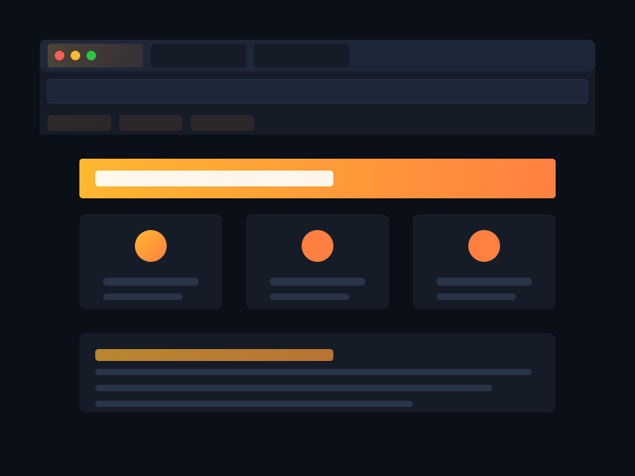

Introducing Solar Browser: A New Dawn in Web Browsing
Today, we're thrilled to introduce Solar Browser to the world - a revolutionary web browser built from scratch by a team of passionate high school students from Türkiye.
Unlike other browsers that build upon existing engines, we're creating everything ourselves - from the rendering engine to the JavaScript interpreter. Solar Browser represents our vision for what the internet experience should be: fast, secure, and truly privacy-focused.
Our journey began with a simple question: why do browsers need to be so complex and resource-intensive? We believed there was a better way, and we've dedicated ourselves to proving it.
What Makes Solar Different?
Solar Browser is being built with three core principles in mind:
- Speed: By writing our own engine from the ground up, we're optimizing for performance at every layer.
- Privacy: No tracking, no data collection - just a clean, private browsing experience.
- Simplicity: An intuitive interface that gets out of your way so you can focus on what matters.
Current Development Status
We've already begun development of our custom JavaScript engine, starting earlier than our original Q3 2025 timeline. We're excited about our initial progress, with the lexer and parser components taking shape. Follow our roadmap to see what we're working on and when you can expect new features.
Support Our Vision
As a team of high school students tackling this ambitious project, we rely on community support to make Solar Browser a reality.
The Challenges of Building a Browser from Scratch
Creating a browser engine from scratch is one of the most challenging tasks in software development. Modern browsers are incredibly complex, with millions of lines of code handling everything from networking and security to layout and JavaScript execution.
Most new browsers today are built on existing engines like Chromium (which powers Chrome, Edge, and Opera) or Gecko (Firefox). We're taking the road less traveled by building our own engine entirely from scratch.
This approach gives us complete control over every aspect of the browser experience, allowing us to optimize for performance and privacy in ways that wouldn't be possible otherwise. It also means we can create a browser that isn't tied to the decisions and priorities of larger tech companies.
Join Our Journey
As a small team of students, we're counting on community support to help bring Solar Browser to life. Whether you're a developer who wants to contribute code, a user excited to test early builds, or someone who can support us financially, there's a way for you to be part of this journey.
Check out our sponsorship page to learn how you can support our development efforts.
Stay tuned for more updates as we continue building the future of web browsing, one line of code at a time!